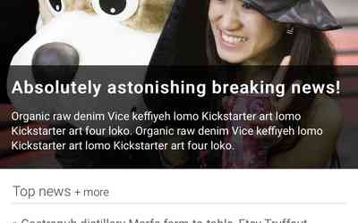

The Brighton Times
This is the first project I had to turn into a responsive website. I learned how to use media queries and how to change the order of the different sections based on the width of device. Also, I learned how to create a fly-out menu, which I absolutely love.